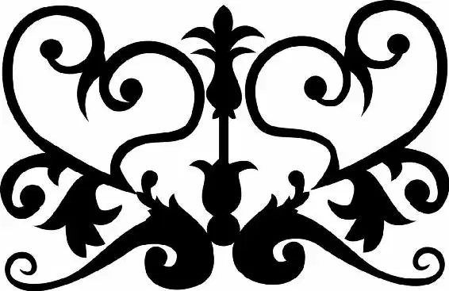

For a month after King Frederick’s death, a general sadness hung over the kingdom. But after a while, the time for mourning came to an end. And when it did, a proclamation from the palace was sent out.
It happened by chance while Ella was in the market, where she had first heard news of the ball. Now she was with her stepsisters, helping them shop, which entailed carrying their bags. Ella drifted toward a commotion in the town square, her sisters following.
The royal crier was once again standing on the edge of the fountain, reading from a large scroll. “Hear ye! Hear ye!” he cried. “Know that our new king hereby declares his love for the mysterious princess who wore glass slippers to the ball, and requests she present herself at the palace, whereupon, if she be willing, he will forthwith marry her, with all due ceremony.”
For Ella, it was as if time had stopped. The prince loved the mystery princess? Kit loved her? After believing that the magical night at the ball would be the last time she ever saw Kit, Ella’s hope sprung anew. Kit was declaring his love for her. A blush crept up Ella’s cheeks, and she felt her heart come alive.
Without a word to her stepsisters, she turned and raced back toward the house. She needed to get to the palace as soon as possible. There was no way she was going to be able to present herself in the beautiful gown she had worn to the ball, but she did have one thing that would help her prove her identity—the glass slipper. Ella laughed, thinking about what her fairy godmother had said that magical night: “You really never do know when a little thing like shoes will matter a great deal.” Oh, how right she had been.
(See, loyal reader? Didn’t I tell you fairy godmothers are always right?)
But when she rushed into her room and pried the floorboard loose, she let out a cry. The only thing in her hiding spot was the toy butterfly. And its wings had been ripped off.
“Are you looking for this?”
Ella whipped around. Her stepmother was sitting in a chair, her face half shadowed, her eyes gleaming. She held Ella’s glass slipper.
“There must be quite a story to go with it,” Lady Tremaine said, dangling the slipper off one finger. “Will you tell me?” Ella shook her head. “Then I will tell you a story. There once was a beautiful young girl, who married for love. She had two loving daughters. All was well. But then her husband, the light of her life, died. The next time, she married for the sake of her children. But this man, too, was taken from her.” She smiled at Ella, but it was a cold smile that didn’t reach her eyes. “And she was doomed to look every day upon his beloved child.”
Lady Tremaine stopped, and for a moment, she and Ella just stared at each other. A part of Ella, the part that had experienced the loss of loved ones, felt for her stepmother. But another part, the part that remembered Lady Tremaine’s cruel treatment, felt no sympathy.
Lady Tremaine went on with her story. “She had hoped to marry off one of my beautiful, stupid daughters to the prince. But his head was turned by a girl with glass slippers. And so… She lived unhappily ever after. And so my story would appear to be ended. Now, tell me yours.” She held up the slipper. “Did you steal it?”
Ella shook her head. “It was given to me.”
“Given to you? Given to you?” Her stepmother let out a cruel laugh. “Nothing is ever given. For everything, we must pay and pay.”
“That’s not true,” Ella said. “Kindness is free. Love is free.”
Anger flashed across Lady Tremaine’s face. “You’re wrong. Love costs us everything.” The slipper swayed under the woman’s finger and Ella watched fearfully. If it fell and broke, she would have nothing to show Kit. As if reading her thoughts, Lady Tremaine told Ella what would happen next.
She, a lady, would vouch for Ella. For after all, who would believe a servant girl with no family was the beautiful “princess” who had stolen the prince’s heart? When Ella and the prince were married, Ella would make Lady Tremaine the head of the royal household and ensure that Anastasia and Drisella were married to wealthy lords. Lady Tremaine would be assured a place in society for the rest of her days, and as head of household, she informed Ella, she would control the palace.
Ella’s hands shook as her stepmother outlined the plan. She had tried with every fiber of her being to put on a brave front in the face of her stepmother’s cruelty. She had tended to all the housework, to every whim and desire of her stepfamily. She had lived in the attic of her own home. She had become Cinderella. She had given up so much. But she was tired of it. She wouldn’t let her stepmother take anything more. “No,” she said.
“No?” Lady Tremaine repeated.
“I will not allow you to ruin the palace the way you have ruined my home,” Ella said. “I was not able to protect my father from you, but I will protect Kit, and the kingdom.”
Lady Tremaine’s eyes narrowed and her cheeks grew red. “So you are courageous to boot. That is a mistake.” Lifting her hand high in the air, she smashed the glass slipper against the wall. It shattered, leaving Lady Tremaine holding a single large shard.
Ella let out a gasp. “Why are you so cruel?” she cried. “I don’t understand. I have tried to be kind, though you do not deserve it. Why do you do it? Why?”
The question seemed to unhinge Lady Tremaine. “Why?” she yelled back. “Because you are young and innocent and good, and I…I…I am not.” Without another word she stormed out, slamming the door and locking it behind her.
Ella rushed over. But she knew it was useless before she even got there. She was trapped. And her stepmother was free to do and say whatever she pleased.
Lady Tremaine wasted no time in doing just that. As soon as she was sure Cinderella couldn’t leave the attic, she brought the shard of slipper to the one person she knew she could count on—the Grand Duke.
“May I ask where you got this?” he inquired when Lady Tremaine showed him the shard. Lady Tremaine nodded demurely. “From a ragged servant girl in my household,” she answered.
The Grand Duke looked down at the glass, his expression thoughtful.
“And you came straight to me?”
“Of course,” Lady Tremaine answered. “I have heard that you are the most honorable man in the kingdom.”
They exchanged smiles.
“And the girl . . .”
“Is in a safe place,” she finished.
The man nodded. “You have spared the kingdom from a great deal of embarrassment,” he said.
Lady Tremaine looked pleased. This was just what she had hoped would happen, for now the Grand Duke owed her. When she made that clear, he asked what she wanted. The answer came quickly. “A title for myself,” Lady Tremaine said. “And advantageous marriages for my two daughters.”
“Done,” he agreed. “And the girl?”
“Do with her what you will,” Lady Tremaine said, waving a hand in the air. “She’s nothing to me.”
The Grand Duke tested the sharp point of the shard on his finger. “Well,” he said after a moment, “the young king will take some convincing. He is… willful. But keep this girl out of sight until we may profitably marry him off, and you will get what you desire.”
Lady Tremaine smirked. She would be more than willing to keep Cinderella out of sight— for as long as necessary.
Kit was exhausted. Since his father’s death, he had barely slept, and once he had sent out the proclamation seeking his mystery princess, sleep had been even more elusive. He stared out the window of the throne room. The Captain of the Guard stood nearby, a comforting presence. If only Kit could find the girl he couldn’t stop thinking about . . .
Hearing footsteps, Kit looked up. The Grand Duke was striding across the room, a barely suppressed smile on his face. Coming to a stop in front of him, the Grand Duke held out a glass shard. Kit recognized it instantly.
“Where… ?” he began.
“Abandoned on the side of the road,” the Grand Duke answered.
Kit held the shard in his hand, tracing the edge with his thumb. “And have you found her?”
“No,” the older man said. “She has disappeared.”
“There must be some reason she vanished,” Kit said, refusing to give up all hope. The girl he knew from the woods was strong and courageous. She wouldn’t run away. A dark thought raced through his head. “Perhaps she has been prevented from speaking…”
At the suggestion, the Grand Duke shifted uncomfortably. Kit noticed and was about to press him when the other man spoke, his words a knife to Kit’s heart.
“It pains me to say this, Your Highness, but has it occurred to you that the maiden might not return your feelings?”
He paused, letting the words sink in. “She may see you as our enemies do: the callow, naive princeling of a weak little monarchy. Perhaps… she simply does not love you.” Kit flinched as though struck. “I knew you were cynical , Grand Duke. I did not know you were cruel.”
“The world is cruel, Your Highness,” the Grand Duke replied. “Not I.”
Until then, the Captain of the Guard had been silent. He was surprised to hear the Grand Duke speak to the young king this way, and he didn’t like it. “Don’t lose heart, Kit,” the Captain said, trying to help.
The Grand Duke shot the Captain a look. “On the contrary,” he said. “Lose heart and gain wisdom. The people need to know that the kingdom is secure. That the king has a queen. They want to face the future with certainty.”
For a moment, Kit was silent, the Grand Duke’s words ringing in his ears. The older man did have a point. But on his deathbed, his father had told him that the only way the Grand Duke could ever rule was for Kit to let him. And Kit was not ready to roll over and give up. Not yet.
“Now I am king,” Kit said. “And I say we must seek out the mystery princess. Even if she does not want to be found. I have to see her again.” His eyes narrowed and he focused his next words directly at the Grand Duke. “That is my command.”
The Grand Duke nodded reluctantly. “As you will, Your Majesty. But if she is not found, then for the good of the kingdom, you must marry the princess Chelina.” He knew there was no hope of finding the mystery princess. What harm would it do to let the newly crowned king think he was in control?
Kit hesitated. He did not want to marry Princess Chelina. But if agreeing meant he could continue his search for the girl from the woods, he would say what was needed. “Very well. But you will spare no effort.” His fate, his heart, and his kingdom were on the line.
